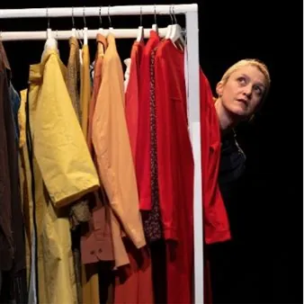

dom 29 nov · dalle 17:00
Dorita CosaSenti - Contatto TIG in famiglia 2026/2027
29 novembre 2026 ore 17:00 Teatro San Giorgio Dorita CosaSenti è un viaggio teatrale per bambine e bambini dai 3 anni in su, un’avventura alla scoperta di sé e delle proprie sensazioni. La protagonista, Dorita, ci accompagna in una settimana di vacanza, dove ogni giorno…
 Indicazioni
Indicazioni
- Costi e prenotazioni
- Costo non indicato · Prenotazione non indicata
- Programma
- Programma da verificare. Apri la fonte ufficiale per orari e possibili aggiornamenti.
- In caso di maltempo
- Nessuna indicazione specifica pubblicata.
- Note
- Acquisito automaticamente dalla fonte.
L’EVENTO
Descrizione completa
Dorita CosaSenti è un viaggio teatrale per bambine e bambini dai 3 ann i in su, un’avventura alla scoperta di sé e delle proprie sensazioni. La protagonista, Dorita , ci accompagna in una settimana di vacanza, dove ogni giorno esplorerà e darà un nome a una nuova emozione. Ogni tappa di questo viaggio è un’opportunità per fermarsi e chiedersi: “Cosa senti?” Felicità, tristezza, entusiasmo, paura... ogni emozione diventa un mistero da risolvere, un abito da indossare, per vivere ogni giorno con curiosità. In un mondo dove le parole non bastano per descrivere ciò che proviamo, Dorita si lascia attraversare dalle emozioni e le veste con parole e immagini. In scena un’attrice e tanti vestiti colorati danzano e prendono vita come le emozioni di Dorita. Un invito al pubblico ad ascoltare, attraverso il cuore, un mondo reale fatto di sensazioni, di scoperte, di libertà e, soprattutto, di empatia. Sette giorni…tante emozioni da esplorare e scoprire.
Ogni giornata porta con sé una nuova sfumatura: felicità, rabbia, entusiasmo, tristezza, paura… sensazioni che emergono all’improvviso, a volte leggere, a volte ingombranti, tutte da attraversare. Dorita si mette in ascolto. Si lascia attraversare, indossa ciò che prova, osserva i cambiamenti. Cerca parole con cui vestire le emozioni, che prendono forma nel corpo, nella voce e nelle immagini evocate.
In scena, un’attrice e due strutture piene di abiti colorati.
I costumi danzano, si animano, diventano presenze giocose. Ogni oggetto si trasforma: un nastro diventa musica, una tenda un rifugio, un bastone un pensiero. Tutto vibra insieme a Dorita, in un gioco continuo di metamorfosi.
Un invito a fermarsi un attimo e ascoltare: “Cosa senti?”
Dorita ci mostra il sentire come un viaggio senza una meta precisa, fatto di incontri e scoperte, dove ogni emozione presenta la sua forma unica, pronta a essere accolta e vissuta, momento dopo momento.
Un invito al gioco e all’ascolto, per vivere ogni emozione con libertà.
Durata: 45 minuti
Posto unico 8€
Dai 3 anni Biglietti disponibili su Vivaticket, presso le rivendite autorizzate e in biglietteria
IL PROGRAMMA
Programma e orari
Appuntamenti raccolti dalle fonti elencate. Dove manca un orario, non è ancora disponibile in questa scheda.
Programma pubblicato
- Dal 2026-11-29 al 2026-11-29
INFORMAZIONI UTILI
Prima di partire
- Controllare la fonte prima di partire.
ORGANIZZAZIONE